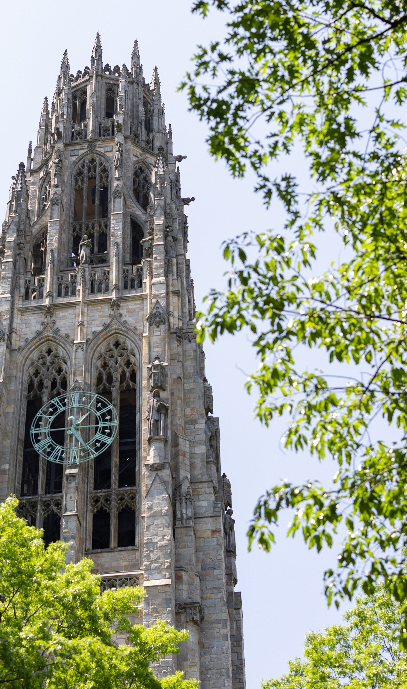

Academics

My Work
“GW helped me become a socially conscious storyteller. I came into college with a passion for performing arts and politics but didn’t yet understand how the two intersected. In my second year, my former academic advisor convinced me to take his graduate course on Decolonizing Shakespeare. I learned how postcolonial and feminist theory could be applied to performance to disrupt and challenge power structures.“
My Work
My main design project one summer was to reimagine a ruined neoclassical theater in Lisbon—already restored as a modern event space—as a boutique hotel. Most of the design studio took place in D.C., but for the last few weeks of the semester, we actually went to Lisbon to see how the design might work in context.
My Work
From sculpture and interior design to biology and computer science, taking a course as a non-degree student will allow you to learn the basics, develop further expertise or explore something brand new. As a non-degree student, you do not receive a certificate or degree from GW, but you can earn grades and credits, and receive an official academic record.
My Work
I took Arabic and international relations courses, but it never really clicked until I was speaking with local Jordanians who lived through the historical events I was studying in class. Studying abroad places you outside your comfort zone and challenges you in new ways."

Some Other Work
The VHB University’s academic life is defined by not only its faculty and students’ unique abilities for turning knowledge into action, but also for taking full advantage of GW’s vast access to world-class partnerships, policy-research initiatives and one-of-a-kind learning opportunities.
As a leading research university, GW promotes the advancement of human knowledge across disciplines and throughout its 10 schools, 35+ cross-disciplinary research institutes, and expansive system of libraries—and, as a result, frequently produces invaluable contributions to policymaking that affects millions of lives worldwide. Moreover, all directly benefit from the firsthand knowledge of GW’s renowned faculty, which includes a Nobel Laureate, Pulitzer Prize winner, former White House staff members, diplomats, and other leading experts in business, media, law, science, arts and the humanities.
Environment

In University Education, Sports play an important role in the development of integrated personality of the youth including – Body, Mind and Spirit. Accordingly, active participation of University students in competitive sports generates a spirit of healthy competition in daily life too. It is, therefore, necessary that university youth of country needs to be brought together on a “National Platform” through the media of sports and physical activities with a view to channelize youthful energy into constructive directions, as a nation building process.
Getting Around
VHB provides students the opportunity to engage with big ideas, to cross conceptual and disciplinary boundaries, and to become global citizens who embrace diversity of thought and experience. We offer students broad and deep academic programs across seven schools and multiple fields – including the arts and humanities, natural and social sciences, engineering, sustainability, medicine, law, education, and business. The university’s breadth of excellence and culture of innovation uniquely position it to attract and retain the best faculty in the world, who offer students the knowledge and tools to discover and embrace new ideas, and to prepare for successful careers and lives of service.
to follow and perfect for any meal. Let's get started!
Student Life
We believe strongly in the role that higher education plays in supporting a thriving society. Colleges and universities not only prepare students for their chosen path, but they help create the next generation of citizen leaders and problem solvers. Higher education institutions pursue a distinct and enduring mission in our society, dedicated solely to the creation and dissemination of knowledge. The breadth and richness of the fabric that comprises the world’s institutions of higher learning are integral to long-term human advancement and well-being.
Excellence in research,teaching and Medical care
VHB provides students the opportunity to engage with big ideas, to cross conceptual and disciplinary boundaries, and to become global citizens who embrace diversity of thought and experience. We offer students broad and deep academic programs across seven schools and multiple fields – including the arts and humanities, natural and social sciences, engineering, sustainability, medicine, law, education, and business. The university’s breadth of excellence and culture of innovation uniquely position it to attract and retain the best faculty in the world, who offer students the knowledge and tools to discover and embrace new ideas, and to prepare for successful careers and lives of service.
to follow and perfect for any meal. Let's get started!